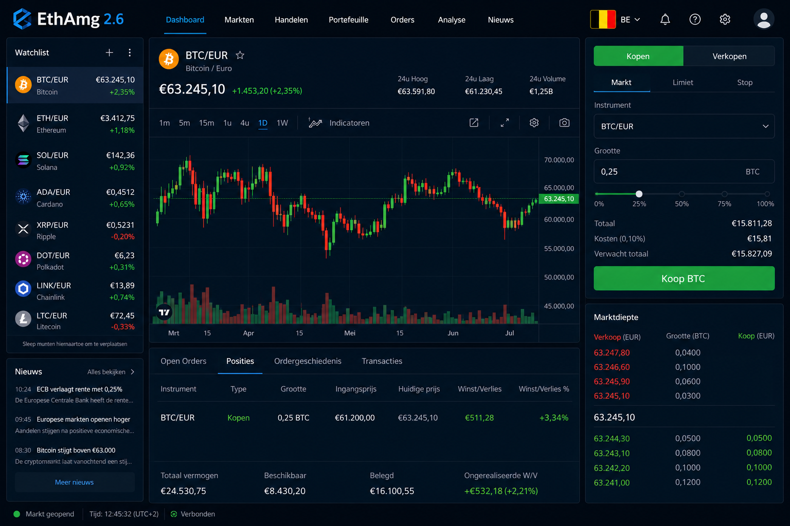

De belangstelling voor online financiële platforms blijft groeien, en daardoor zoeken steeds meer mensen naar informatie over EthAmg 2.6. Nieuwe technologieën, verbeterde analysetools en gebruiksvriendelijke interfaces maken digitale financiële oplossingen toegankelijker voor een breder publiek. Daarom willen veel gebruikers begrijpen wat een platform precies aanbiedt voordat zij een account aanmaken.
EthAmg 2.6 wordt vaak genoemd door mensen die op zoek zijn naar een moderne omgeving voor marktanalyse en financieel beheer. Het platform is ontworpen om gebruikers toegang te geven tot verschillende functies die kunnen helpen bij het volgen van markten en het verkrijgen van inzicht in financiële ontwikkelingen. In dit artikel bekijken we wat EthAmg 2.6 is, hoe het werkt en welke kenmerken het onderscheiden van andere moderne platforms.
EthAmg 2.6 is een digitaal financieel platform dat gebruikers toegang biedt tot hulpmiddelen voor marktanalyse, gegevensmonitoring en informatievoorziening. Het doel van het platform is om een centrale omgeving te creëren waarin gebruikers verschillende markten kunnen volgen en relevante gegevens kunnen bekijken.
Het platform richt zich op zowel nieuwe als ervaren gebruikers. Beginners kunnen gebruikmaken van een overzichtelijke interface en educatieve informatie, terwijl meer ervaren gebruikers toegang hebben tot aanvullende analysetools en marktgegevens.
In plaats van zich uitsluitend op één type gebruiker te richten, probeert EthAmg 2.6 een brede doelgroep te ondersteunen. Hierdoor kan het platform interessant zijn voor mensen die financiële markten beter willen begrijpen en voor gebruikers die regelmatig marktinformatie analyseren.
Het gebruik van EthAmg 2.6 begint doorgaans met het aanmaken van een account. Nadat de registratie is voltooid, krijgen gebruikers toegang tot het dashboard van het platform. Vanuit deze centrale omgeving kunnen verschillende functies worden geopend en beheerd.
Het dashboard bevat meestal marktinformatie, analysetools en prestatieoverzichten. Gebruikers kunnen gegevens bekijken, trends volgen en verschillende indicatoren raadplegen om een beter beeld te krijgen van actuele marktontwikkelingen.
EthAmg 2.6 is ontworpen met gebruiksgemak als belangrijk uitgangspunt. Hierdoor kunnen gebruikers relatief snel navigeren tussen verschillende onderdelen van het platform. Ook wordt informatie vaak op een overzichtelijke manier weergegeven, zodat zowel beginners als ervaren gebruikers gemakkelijk toegang hebben tot relevante gegevens.
Een van de opvallende aspecten van EthAmg 2.6 is de gebruiksvriendelijke interface. Het platform is ontworpen om belangrijke informatie duidelijk weer te geven zonder onnodige complexiteit.
Daarnaast biedt het platform toegang tot verschillende markten en gegevensbronnen. Hierdoor kunnen gebruikers meerdere financiële segmenten vanuit één omgeving volgen. Dit kan bijdragen aan een efficiëntere analyse van marktontwikkelingen.
Analysetools vormen eveneens een belangrijk onderdeel van EthAmg 2.6. Gebruikers kunnen grafieken bekijken, historische gegevens analyseren en markttrends monitoren. Deze functies helpen bij het interpreteren van beschikbare informatie.
Voor gebruikers die hun kennis willen vergroten zijn er vaak educatieve hulpmiddelen beschikbaar. Denk hierbij aan uitleg over marktconcepten, handleidingen en andere informatieve materialen.
Ook beveiliging speelt een belangrijke rol. Moderne beveiligingsmaatregelen worden toegepast om gebruikersaccounts en gegevens te beschermen tegen ongeautoriseerde toegang.
EthAmg 2.6 biedt verschillende voordelen die aantrekkelijk kunnen zijn voor gebruikers die op zoek zijn naar een modern financieel platform. De combinatie van toegankelijkheid, analysemogelijkheden en een overzichtelijke interface maakt het voor veel gebruikers eenvoudig om aan de slag te gaan.
Een ander voordeel is dat belangrijke informatie centraal beschikbaar is. Hierdoor hoeven gebruikers minder tijd te besteden aan het zoeken naar gegevens via verschillende bronnen.
Tegelijkertijd is het verstandig om bepaalde aspecten zorgvuldig te evalueren voordat men zich registreert. Iedere gebruiker heeft immers andere doelen, ervaring en verwachtingen. Het is daarom belangrijk om de beschikbare functies te onderzoeken en te bepalen of deze aansluiten bij persoonlijke behoeften.
Zoals bij elk financieel platform blijft het essentieel om voldoende onderzoek te doen en een goed begrip te ontwikkelen van de beschikbare hulpmiddelen en marktomstandigheden.
Voor veel beginners kan EthAmg 2.6 toegankelijk aanvoelen dankzij de overzichtelijke structuur en gebruiksvriendelijke navigatie. Nieuwe gebruikers hoeven doorgaans geen uitgebreide technische kennis te hebben om de basisfuncties van het platform te begrijpen.
Daarnaast kunnen educatieve bronnen helpen bij het opbouwen van kennis over financiële markten. Door informatie stap voor stap beschikbaar te maken, ondersteunt het platform gebruikers die hun ervaring geleidelijk willen uitbreiden. Dit maakt EthAmg 2.6 een interessante optie voor mensen die voor het eerst kennismaken met moderne financiële technologie.
Veel moderne financiële platforms bieden vergelijkbare basisfunctionaliteiten, maar EthAmg 2.6 richt zich op een combinatie van eenvoud, toegankelijkheid en analysemogelijkheden binnen één omgeving.
In plaats van gebruikers te overladen met complexe functies probeert het platform een evenwicht te vinden tussen gebruiksgemak en functionaliteit. Hierdoor kunnen gebruikers sneller relevante informatie vinden en efficiënter werken met beschikbare gegevens.
Deze focus op een overzichtelijke gebruikerservaring kan bijdragen aan een soepelere interactie met het platform, ongeacht het ervaringsniveau van de gebruiker.
EthAmg 2.6 presenteert zich als een modern financieel platform dat gebruikers toegang biedt tot marktinformatie, analysetools en educatieve hulpmiddelen. Dankzij de gebruiksvriendelijke interface en brede toegankelijkheid kan het platform interessant zijn voor zowel beginners als ervaren gebruikers.
Zoals bij iedere financiële dienst is het verstandig om de beschikbare functies zorgvuldig te onderzoeken en te beoordelen hoe deze aansluiten bij persoonlijke doelen. Door inzicht te krijgen in de mogelijkheden van het platform kunnen gebruikers beter bepalen of EthAmg 2.6 aansluit bij hun verwachtingen en behoeften in 2026.
EthAmg 2.6 is een digitaal financieel platform dat gebruikers toegang biedt tot marktinformatie, analysetools en educatieve middelen. Het platform is ontworpen om gebruikers te helpen markten te volgen en relevante gegevens te analyseren via een centrale online omgeving.
Gebruikers maken eerst een account aan en krijgen vervolgens toegang tot een dashboard met verschillende functies. Vanuit deze omgeving kunnen zij marktgegevens bekijken, trends analyseren en gebruikmaken van beschikbare hulpmiddelen om financiële informatie beter te begrijpen.
Ja, EthAmg 2.6 is ontworpen met gebruiksgemak in gedachten. De overzichtelijke interface en beschikbare educatieve bronnen kunnen nieuwe gebruikers helpen om vertrouwd te raken met het platform en de basisprincipes van marktanalyse.
Het platform biedt onder andere een gebruiksvriendelijke interface, analysetools, toegang tot marktinformatie, educatieve materialen en beveiligingsfuncties. Deze onderdelen zijn bedoeld om gebruikers te ondersteunen bij het volgen en analyseren van financiële markten.
Ja, EthAmg 2.6 is ontworpen als een online platform. Gebruikers kunnen via een internetverbinding toegang krijgen tot hun account, marktinformatie bekijken en gebruikmaken van de beschikbare functies vanaf compatibele apparaten.